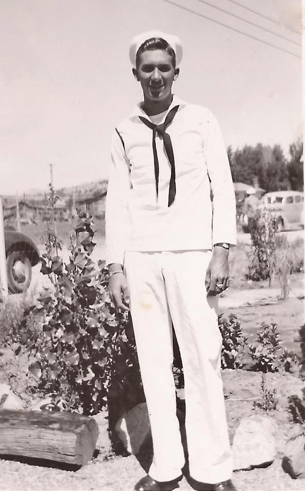

About Me
My name is Troy Rosenow and I am the son of a US Army Veteran. My father served in Germany during the Vietnam War. My ex-Father-In-Law served in the US Navy during World War II. Caring for our veterans is a topic that is extremely important to me. These people put their lives on the line to protect us in ways we never have to experience ourselves. It is unfortunate that many American citizens take their freedom for granted. Regardless, there are many ways in which one can help our veterans. I hope you find my website helpful in that regard.
 Source: Personal photo of Dwayne PorterPurpose
The purpose of this website is to provide users with information on the many ways they can help United States veterans, both past and present. We also offer a monthly newsletter that provides the most current information on this topic.
Accessibility Statement
At HelpingOurHeroes.com, we are committed to ensuring that our website is accessible to all individuals, including those with disabilities. We strive to provide a user-friendly experience that allows everyone to access the valuable information we share about supporting US veterans. Our team adheres to the Web Content Accessibility Guidelines (WCAG) 2.1 to ensure that our content is perceivable, operable, understandable, and robust. We continuously work to improve and maintain the accessibility of our website to ensure that it remains inclusive and accessible to all visitors. If you encounter any accessibility barriers or have suggestions for improvement, please don't hesitate to contact us using the form below. Your feedback is valuable to us as we remain dedicated to providing equal access to all individuals seeking ways to assist our US veterans.